もくじ
画面の中の赤い丸は、指で軽く触れる（タップする）場所です。
はじめての設定
-
使う言語をえらぶ
アプリを初めて開くと、言語をえらぶ画面が出ます。「日本語」をえらんで、下の「Start with this language」をタップします。言語は、あとから設定画面で変えられます。
-
利用規約とプライバシーポリシーに同意する
青い文字をタップすると内容を読めます。読み終えたら右の2つの四角にチェックを入れて、「同意して利用を開始する」をタップします。
-
6けたのPINコード（暗証番号）を決める
アプリを開くときに使う数字を6つ入力して「次へ」をタップします。確認のため、もう一度同じ数字を入力して「設定する」をタップします。目のマークをタップすると、入力した数字を確かめられます。
-
準備完了です
パスワードの一覧画面が出ます。最初は何も登録されていません。
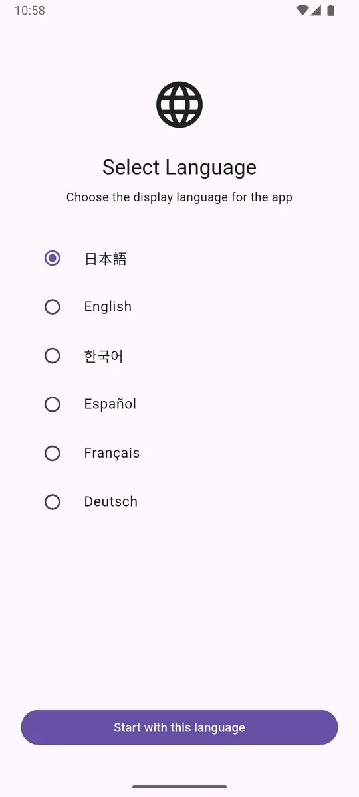
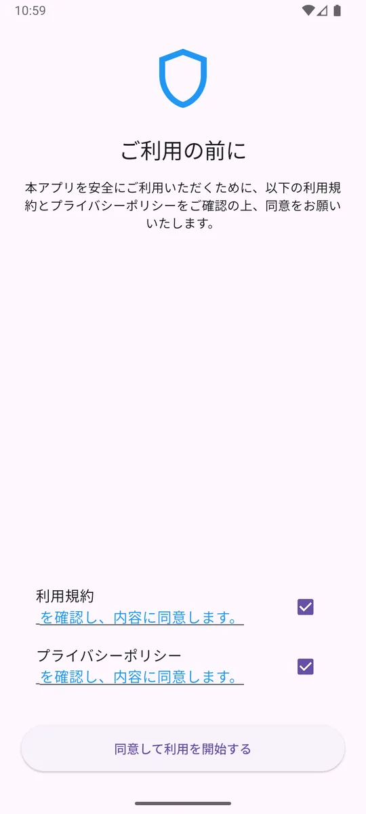
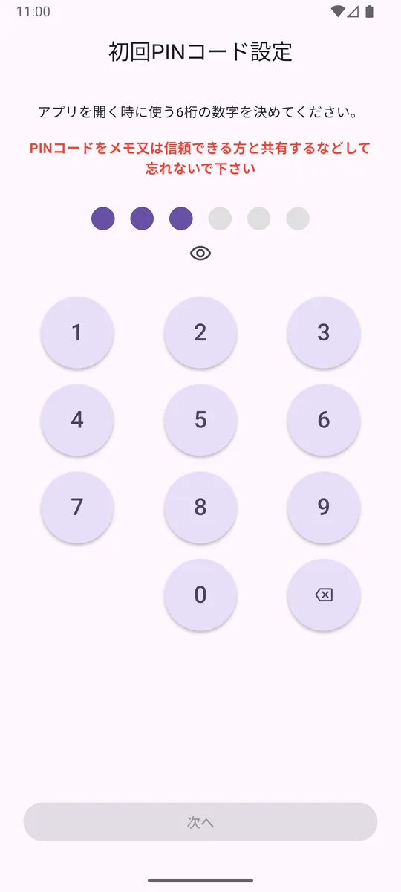
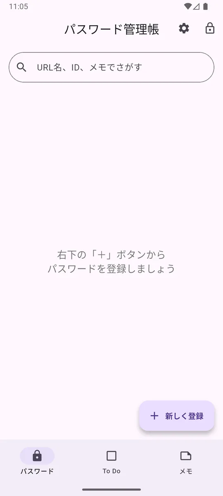
PINコードを忘れると、アプリの中のデータを見られなくなります。紙に書いて家族と共有するなど、忘れない工夫をしてください。
画面の見かた
画面のいちばん下に、3つのボタンがあります。タップすると画面が切り替わります。
パスワード
サービスごとのID（ユーザー名）とパスワードを保管します。
To Do
やることを書いておく場所です。期限の日時に通知でお知らせできます。
メモ
自由に書けるメモ帳です。ラベルで分類できます。
画面右上の ⚙️ 歯車 は設定、🔒 カギ はすぐにロックするボタンです。
無料でお使いの場合、画面の下に広告が表示されます。プレミアムプランでは広告が消えます。
アプリを開く（ロック解除）
-
PINコードを入力する
アプリを開くと「ロック解除」の画面が出ます。決めておいた6けたの数字を入力すると、自動で開きます。
-
指紋や顔でも開けます
スマホに指紋や顔が登録されていれば、左下の指紋マークからPINコードを使わずに開けます。
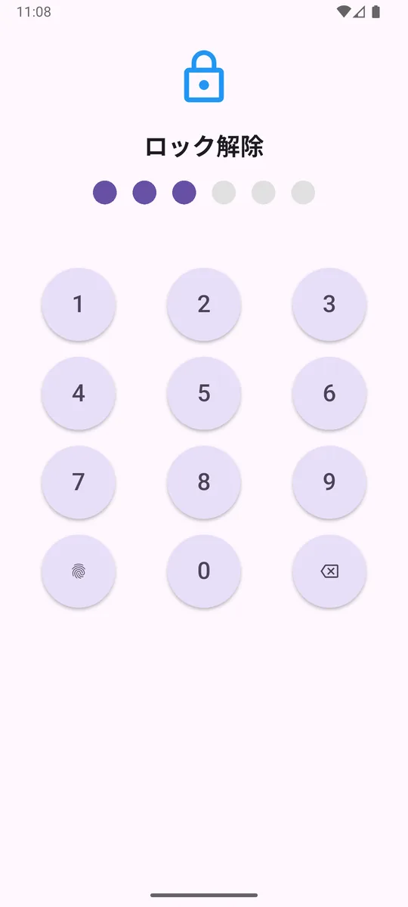
ほかのアプリに切り替えて60秒たつと、自動でロックされます。
パスワードを登録する
-
右下の「＋ 新しく登録」をタップ
登録の画面が開きます。
-
「URL名」に、どのサービスか分かる名前を入れる
例：「Google」「Amazon」「○○銀行」など。
-
「ID / ユーザー名」を入れる
ログインに使うIDやメールアドレス、電話番号などです。
-
「パスワード」を入れる
目のマークで、入力した文字を見る／かくすを切り替えられます。まだ決めていないときは、となりの丸い矢印のマークで自動で作れます。
-
「メモ（任意）」は、書いても書かなくてもかまいません
合言葉や、ログインのときの注意などを書いておけます。
-
「保存する」をタップ
一覧に追加されます。一覧は名前の順に並びます。
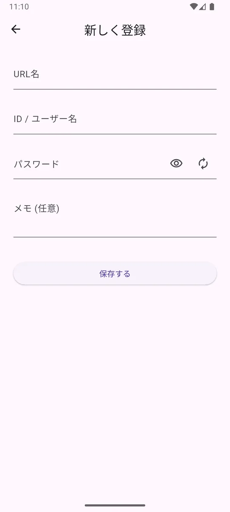
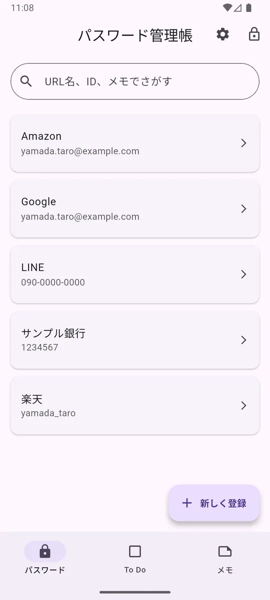
パスワードを見る・コピーする
-
一覧で、見たいサービスをタップ
くわしい画面が開きます。
-
目のマークでパスワードを表示
はじめは「●●●」でかくれています。目のマークをタップすると文字が見えます。
-
四角が重なったマークでコピー
ID・パスワード・メモのとなりにあるマークをタップするとコピーされます。ログインする画面で「貼り付け」をすれば入力できます。
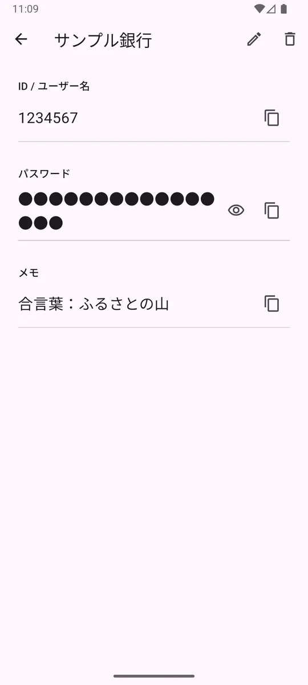
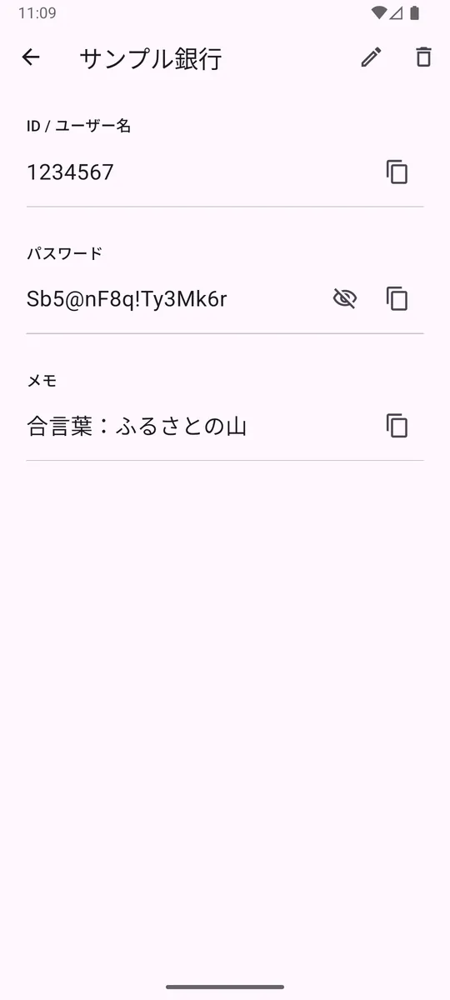
ほかの人に見られないよう、コピーしたパスワードは30秒後に自動で消えます。間に合わなかったときは、もう一度コピーしてください。
さがす（検索）
-
一覧の上の「URL名、ID、メモでさがす」をタップ
文字を入力できるようになります。
-
さがしたい言葉を入れる
入力した言葉をふくむものだけが、すぐに表示されます。
URL名（サービス名）・ID・メモの3つからさがします。パスワードそのものではさがせません。
安全なパスワードを作る
-
登録や編集の画面で、パスワード欄の右にある丸い矢印のマークをタップ
1回タップするだけで、16文字の安全なパスワードが自動で入ります。
-
そのまま「保存する」をタップ
作り直したいときは、もう一度マークをタップします。
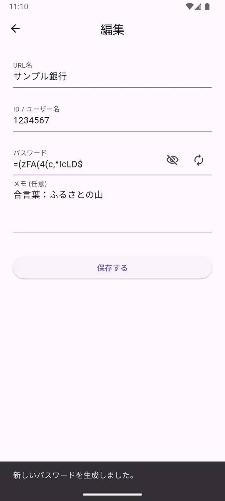
英語の大文字・小文字・数字・記号をまぜた16文字です。ほかの人に当てられにくく、安全です。
直す・消す
✏️ 直す
-
くわしい画面で、右上のえんぴつのマークをタップ
「編集」の画面が開きます。
-
直したいところを書きかえて「保存する」をタップ
🗑️ 消す
-
くわしい画面で、右上のゴミ箱のマークをタップ
-
確認の画面で「削除する」をタップ
やめるときは「キャンセル」をタップします。
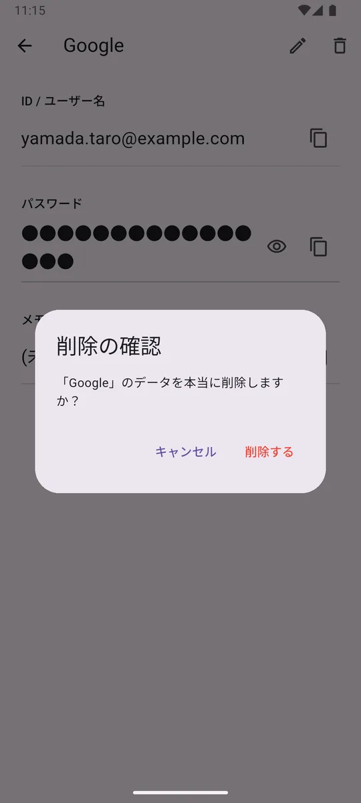
削除する前に、本当に消してよいか確かめてください。
ToDo（やること）
病院の予約や書類の提出など、やることを書いておけます。期限の日時にスマホへ通知を出すこともできます。
-
下の「To Do」をタップし、右下の「＋ 新しいToDo」をタップ
-
「タイトル」にやることを書く
「詳細メモ」には持ち物などを書いておけます（書かなくてもかまいません）。
-
「期限日」と「時間」をえらぶ（任意）
時間まで決めると、「通知」をオンにできます。
-
通知がほしいときは「通知」のスイッチをオン
はじめてオンにしたとき、スマホから「通知を許可しますか？」と聞かれます。「許可」をえらんでください。
-
「保存する」をタップ
一覧は「期限切れ」「今日」「今後の予定」「完了済み」に分かれて並びます。
-
終わったら、左の四角をタップしてチェック
「完了済み」に移ります。もう一度タップすると元にもどります。
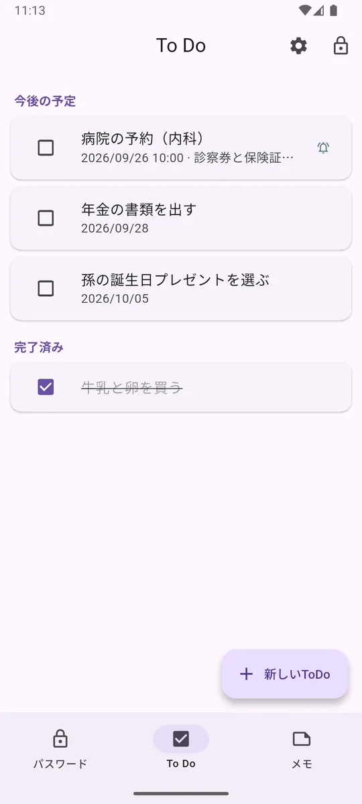
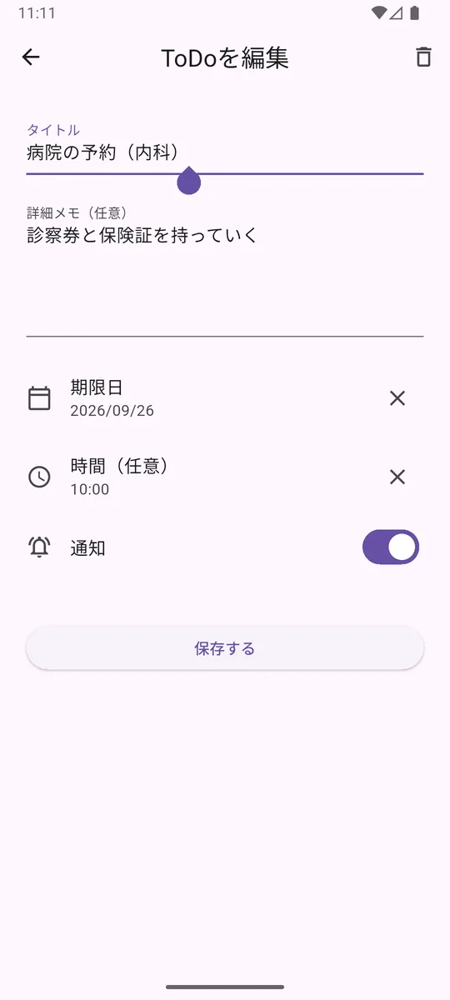
通知をオンにしたToDoには、一覧の右にベルのマークが付きます。スマホの省電力の設定によっては、通知が数分おくれることがあります。
ToDoを直すときは、一覧でタップします。消すときは、開いた画面の右上のゴミ箱マークをタップします。
メモ
📝 メモを書く
-
下の「メモ」をタップし、右下の「＋ 新しいメモ」をタップ
-
タイトルと本文を書く
ラベルがあるときは、タイトルの下のラベルをタップして付けられます（いくつでも付けられます）。
-
右上の ✓ マークをタップして保存
🏷️ ラベルで分ける
-
メモの画面右上の、荷札のマークをタップ
「ラベル管理」の画面が開きます。
-
右下の「＋」でラベルを作る
例：「家族」「健康」「趣味」。えんぴつで名前の変更、ゴミ箱で削除ができます。ラベルを消しても、メモは消えません。
-
一覧の上のラベルをタップすると、そのラベルのメモだけを表示
上の検索欄では、タイトルと本文からさがせます。
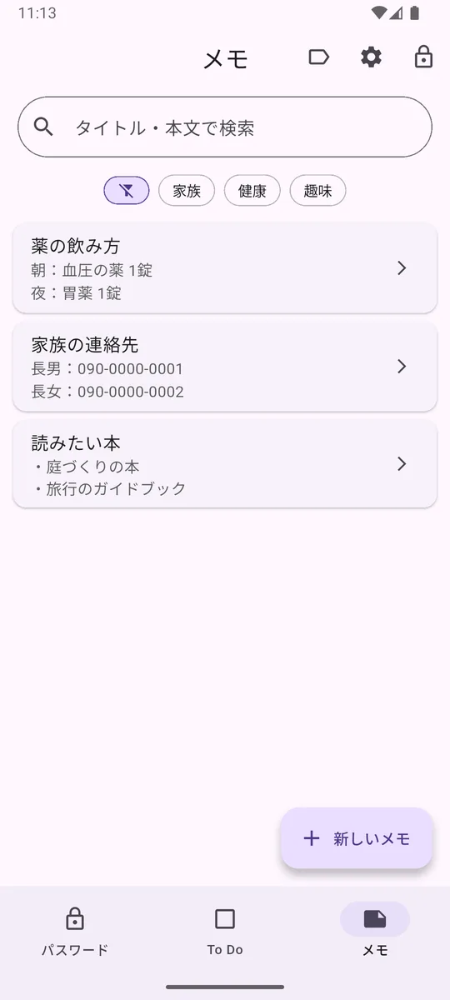
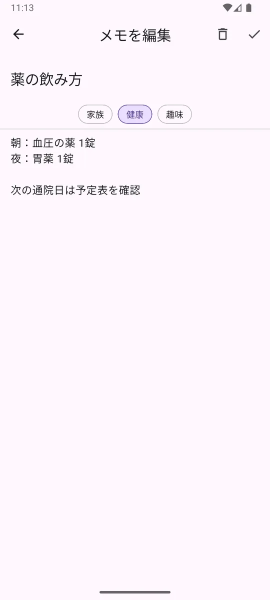
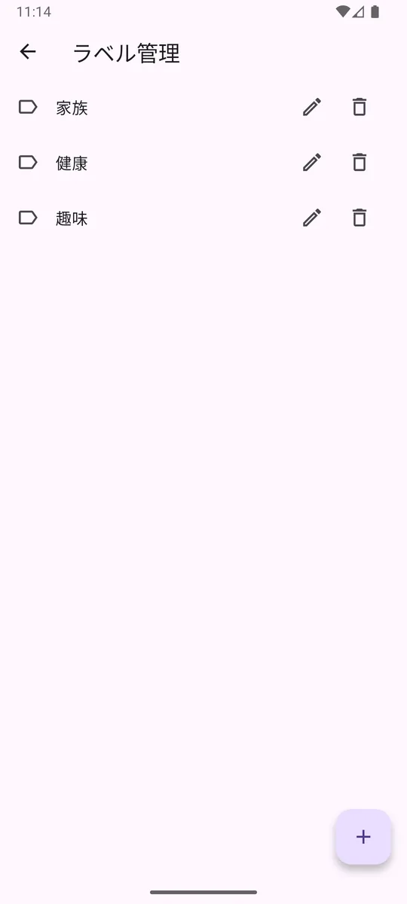
メモとToDoはスマホの中に保存されますが、パスワードのような特別な暗号化はしていません。パスワードや暗証番号は「パスワード」の画面に登録してください。
安全のしくみ
PINコードでロック
6けたのPINコードを知らない人は、アプリを開けません。
指紋・顔でロック解除
スマホに指紋や顔を登録していれば、それでも開けます。
自動ロック
ほかのアプリに切り替えて60秒たつと、自動でロックされます。
まちがい入力の制限
PINコードを5回まちがえると、1分間入力できなくなります。さらにまちがえると、10分、15分…と待つ時間が長くなります。
パスワードは暗号化して保存
パスワードは、スマホの安全な保管場所に暗号化して保存します。
コピーは30秒で消去
コピーしたパスワードは、30秒後に自動で消えます。
登録したパスワード・ToDo・メモを、私たちのサーバーやクラウドへ送ることはありません。なお、無料でお使いの場合は広告を表示するために、広告の会社と通信します（くわしくはプライバシーポリシーをご覧ください）。
データはスマホの中にだけあるため、スマホをなくしたり機種変更したりすると、データも一緒になくなります。プレミアムプランのCSVで保存を使って、控えを取っておくと安心です。
設定
画面右上の歯車のマークから、設定の画面を開きます。
| 項目 | できること |
|---|---|
| ⭐ プレミアムプラン | プレミアムプランの申し込み・確認 |
| ⇅ CSV管理 | パスワードをファイルに保存・ファイルから復元（プレミアムプラン） |
| 🔢 PINコードを変更する | 今のPINコードを入力してから、新しいPINコードを2回入力します |
| 🎨 テーマ設定 | 画面の明るさを「ライトモード」「ダークモード」「システム設定に従う」からえらびます |
| 🌐 言語 | 日本語・English・한국어・Español・Français・Deutsch から切り替えます |
| 📄 利用規約 ほか | 利用規約・プライバシーポリシー・特定商取引法に基づく表記を開きます |
| ❓ 使い方 | このページを開きます |
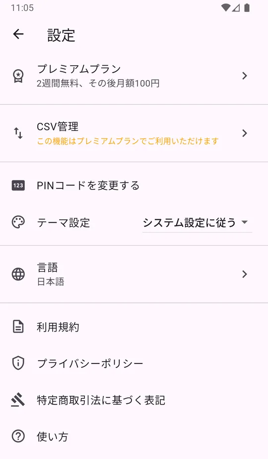
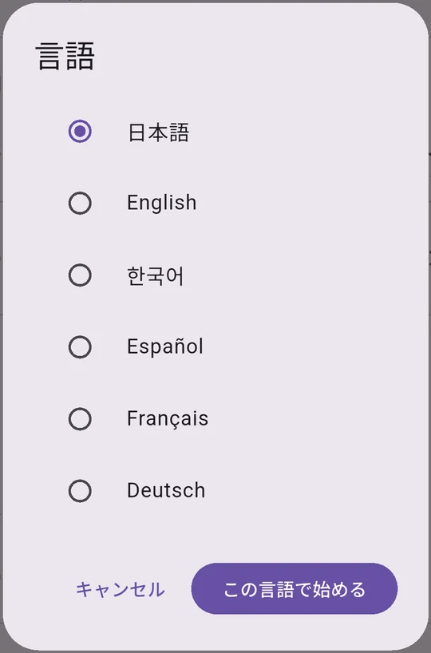
CSVで保存・復元 ⭐ プレミアム
登録したパスワードを、ファイル（CSV形式）に書き出して控えを取れます。機種変更のときは、新しいスマホでそのファイルを読みこむと元にもどせます。
-
設定の画面で「CSV管理」をタップ
-
控えを取るときは「エクスポート」をタップ
画面の案内にしたがって、保存先をえらびます。
-
元にもどすときは「インポート」をタップ
書き出したファイルをえらび、読みこみ方（追加／上書き／全部入れかえ）をえらびます。
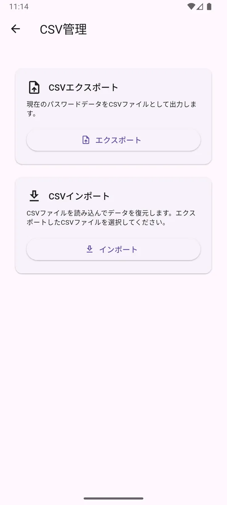
ファイルにはパスワードがそのまま書かれています。人に送ったり、だれでも見られる場所に置いたりしないでください。使い終わったら削除してください。